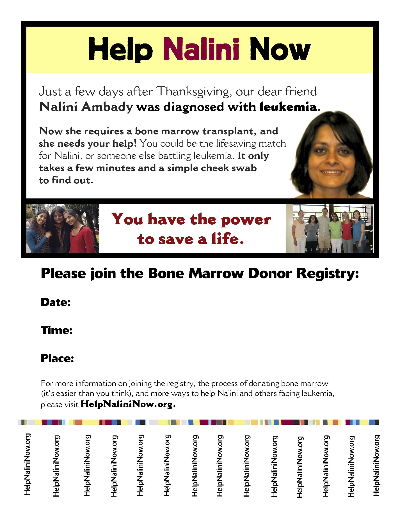
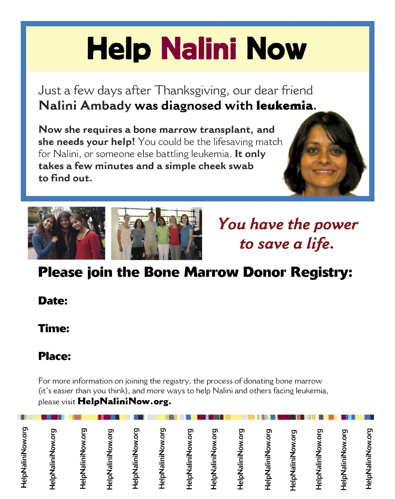
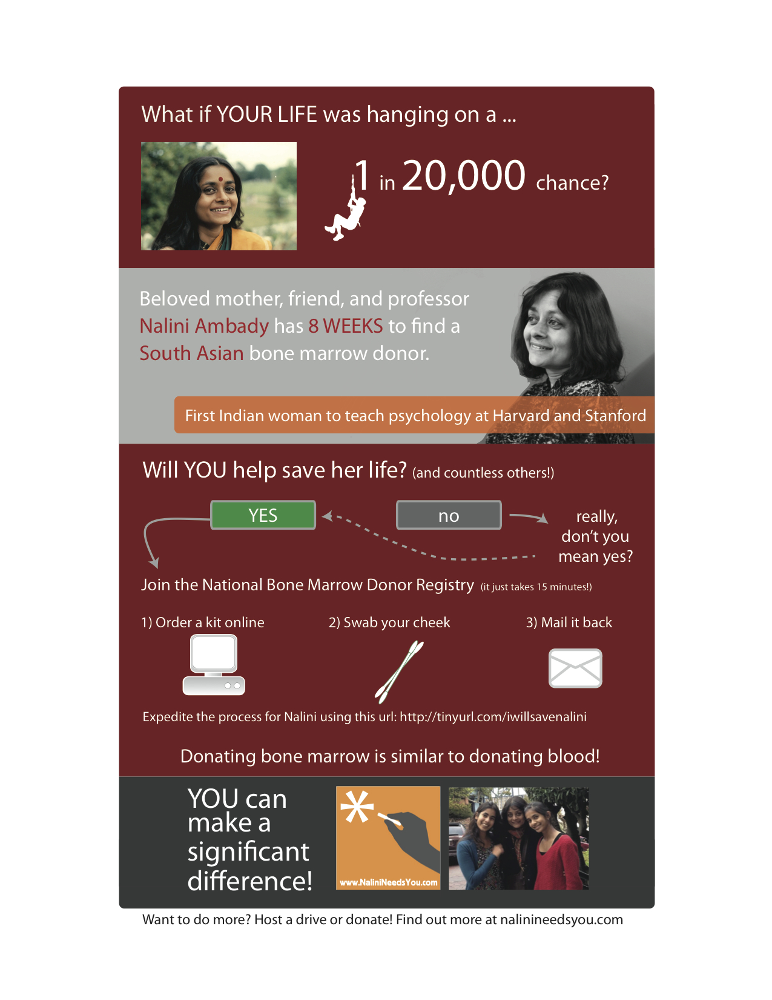

Resources
Here, you'll find materials to help you spread the word about Nalini's cause. Feel free to edit these to fit your audience! (change the bold text)
There are emails to spread the word, emails to publicize a drive, and flyers that can be customized with your drive information.
Flyers
Fill in information about your drive on these flyers:
 Flyer 1 (PDF), or as an editable PDF
 Flyer 2 (PDF), or as an editable PDF
 Flyer 3 (PDF)
Flyer 3 (PDF)
 Flyer 4 (PDF)
Email templates : Spread the word
Dear Friends,
Please take a moment to read this e-mail. Nalini Ambady is a Stanford University professor and a mom with two daughters in high school. She is fighting for her life. In 2004, Nalini was diagnosed with Acute Myelogenus Leukemia (AML) which is a cancer of the blood. After 8 years in remission, Nalini's leukemia has returned, and she needs a bone marrow transplant within the next 6 weeks. Her donor must match her, genetically. The number of South Asians in the bone marrow registries is very low. Nalini needs your help.
Nalini has given a lot. She is a world-class social scientist and is the first South Asian to achieve the highest levels of prominence in social psychology. Nalini has produced ground-breaking research, resulting in hundreds of publications and tens of thousands of citations. As a result, her research has been featured in a number of popular press books, including Malcolm Gladwell's Blink. Nalini is also the first Indian ever to have taught in the Harvard and Stanford psychology departments. She is a beloved teacher and mentor, having changed the lives of many hundreds of students at Harvard, Stanford and Tufts universities. She has also trained world-class psychologists and experts in their respective fields. Nalini is admired as a scholar and cherished as a friend. Most importantly, Nalini is a mother and wife. Her family needs her.
Time is short, and the holidays are here. This is your chance to give a gift that really matters. Please become a registered bone marrow donor by attending a bone marrow drive in your area and having the inside of your check swabbed with a cotton swab. You might be the match that can save Nalini's life. You might even help your own family or others in need of a bone marrow transplant.
Let's use the power of the internet to save a life--something that couldn't be done years ago is now possible...
Three Things You Can Do
1. Please join the donor registry.
If you're between the ages of 18 - 44 and in good general health. Getting registered is quick and requires a simple cheek swab (less than 5 minutes of your time) and filling out some forms (5 minutes of your time). Registering is VERY simple: you complete some paperwork, and get your cheek swabbed. If you are ever a match for someone, their doctors will request either a marrow donation, or more likely for modern marrow donations, stem cells drawn from your blood. Learn more about donating here: http://marrow.org/Registry_Members/Donation/Steps_of_Donation.aspx
It's most likely Nalini will find a match from another South Asian, however, very few South Asians are actually in the registry and this makes it difficult for doctors to find them a match. This is why we need your help.
We are organizing drives nationwide, and we need you to get registered by visiting a local drive. Drives are currently taking place all around the country. Please see the full list of locations here: http://ambadylab.stanford.edu/helpnalininow/drives.html
Can't make it to a drive? No drive in your area? No problem! You can register online and a swab kit will come to you in the mail. It's really that simple.
2. Spread the word
Please share this e-mail message with at least 10 people (particularly South Asians), and ask them to do the same. Please point your friends to the local drives and ask them to get registered. If you can, sponsor a drive at your company or in your community. Drives need to take place in the next 3-4 weeks to be of help to Nalini.
You can also go to Help Nalini Now on Facebook -- please Like this page and help get the message out: www.facebook.com/helpnalininow
Please use the power of your address book and the web to spread this message - today more than ever before, we can achieve broad scale and be part of a large online movement to save lives.
3. Learn more
To learn more, please visit www.helpnalininow.org. The site includes more details on how to organize your own drive, valuable information about AML, plus FAQs on registering, as well as information on the cities where more help is needed.
Join the crowd. Every day, South Asians are contributing to the national bone marrow registry on Nalini's behalf at dozens of drives across the country. To find a drive near you, visit ambadylab.stanford.edu/helpnalininow/drives.html
Thank you,
Friends of Nalini
Email templates : Publicize a drive
You have the power to make a difference and even save a life.
A Bone Marrow Donor Registration Drive, facilitated by [your name or organization], will be held [location] on [date]. To register at the drive, all you need to do is to fill out a consent form and provide a swab of cheek cells for tissue typing.
By registering, you become a member of the National Marrow Donor Program (NMDP), the hub of a
worldwide network of more than 500 leading medical facilities in marrow and blood cell transplantation.
The Bone Marrow Donor Registration Drive will be held:
Day and Date
Company Name
Company Address
11:00 a.m. - 2:00 p.m.
Near Cafeteria
Please bring the following information for your consent form to register:
Your general information including your social security number or driver's license number.
The information of two contacts (friends or relatives) who do not live with you.
Also note, you must meet the following donor eligibility requirements: (1) Be between the ages of 18 - 44,
(2) Have no serious, ongoing lower back problems, (3) Be in good general health.
If you have questions about the Bone Marrow Registration Drive, please contact: [employee
name here].
Register to be a bone marrow donor and be the one who can make a difference and save a life.
Do it because you can.
Home
About Nalini
Find a drive (U.S.)
Register online (U.S.)
Register online (India)
Host a drive
Facebook
Twitter
Contact us